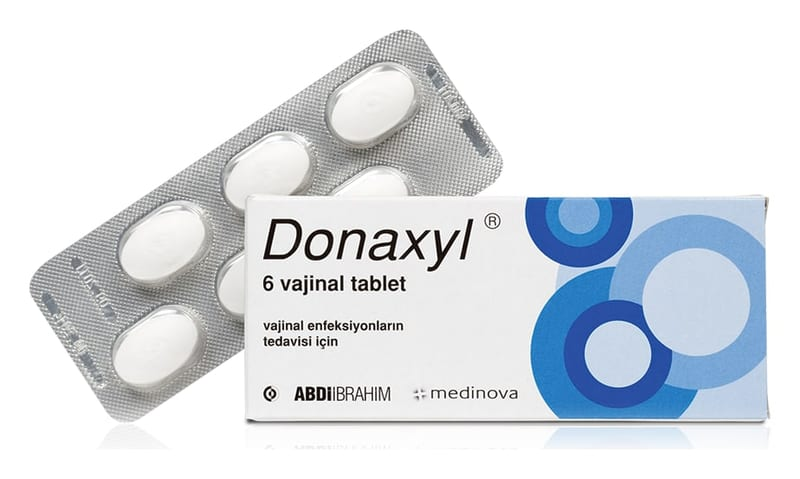

Donaxyl 10 mg Vajinal Tablet, 6 Adet

Ne için kullanılır
KT · Bölüm 1DONAXYL içeriğindeki dekualinyum klorür farklı bakteri ve mantara karşı geniş spektrumlu amonyum bileşiğidir.
DONAXYL, beyaz, oval, bikonveks 6 adet vajinal tablet içeren ambalajlarda sunulmaktadır.
Bakteri veya mantarların neden olduğu vajinal akıntı, kadın doğum ile ilgili cerrahi girişimler veya doğum öncesi enfeksiyonlardan (mikrobik hastalıklar) korunmak amacıyla uygulanır.
Vajinaya uygulandıktan sonra erir ve ilaç bırakır. Etkisini lokal olarak gösterir.